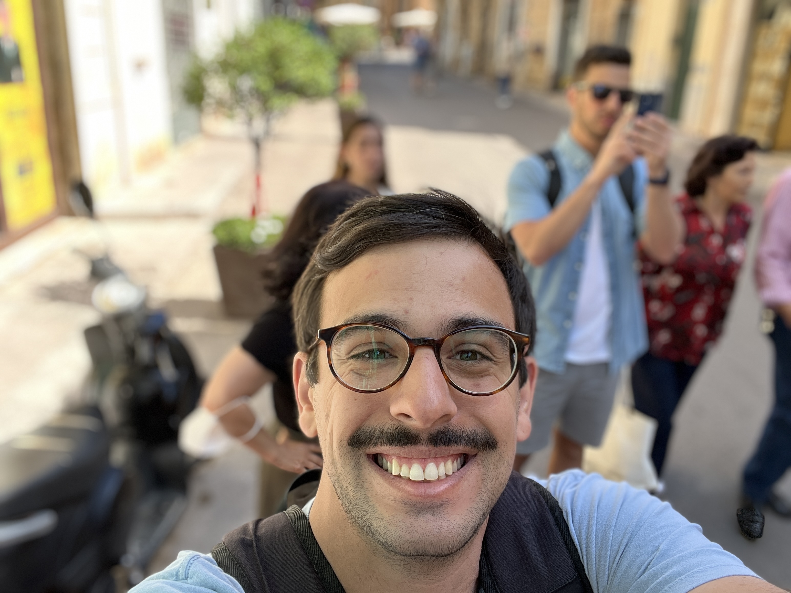

Professional experience
Kellogg School of Management - Associate Systems Analyst (Nov ‘21 - current)
M7 business school at the forefront of transforming MBA education
- Project manager on several marketing, evaluation, and system modules of Slate reimplementation; Gather requirements from Evaluation, IMC, KIS, and AdTech stakeholders and partnered with 3rd party vendor to devise and implement solutions focused on data integrity
- Provide training and support to all Slate users in the form of detailed documentation, personalized training plans, and recorded video demonstrations; Investigate and provide solutions to bug reports and enhancement/maintenance requests
- Formulate, distribute, and execute testing processes for newly implemented Slate features, including new applicant account portal, to thoroughly analyze functionality and uncover & fix bugs
- Expert in communicating complex, technical processes to end users to help inform decisions and improve business processes
Kellogg School of Management - Program Assistant (Nov ‘19 - Nov ‘21)
- Managed day-to-day logistics for Admissions visitors events including info sessions, class visits, student chats, and building tours; managed inventory and supply orders for campus visit program
- Fielded questions from prospective students as they go through the application process; Updated and maintained materials in admissions database for accurate record-keeping
- Queried Slate CRM to analyze large data sets for insights on campus visit program and prospect applications, and to connect student clubs with recent admits for recruiting
- Shipped matriculation documents to international admitted students; Simplified and improved accuracy of address verification process with online form, significantly reducing manual hours
Brain.fm - Operations (Sept ‘17 - Oct ‘19)
SaaS start-up creating music to help users focus, relax, and sleep, with an emphasis on scientific research
- Mapped out $1.4 million company spending budget for 2019; Conducted monthly budget audits and met with department heads to review budget progress
- Project manger for 1099 to W2 payroll conversion; Implemented automated payroll service provider to improve on previous manual payroll system
- Compiled large data sets of feature requests and bug reports into easy-to-understand visuals for A/B testing preparation; Processed SQL queries in customer database to manage sensitive customer data; Trained and managed 2 customer support representatives
- Project manager of Mobile Security Penetration Test for high-value accounting client; Directed team of 3 software developers on client requests and deadlines to ensure security of mobile user data and compliance with GDPR
Yelp, Inc. - Account Executive (Oct ‘15 - Aug ‘17)
Online directory that connects people with great local businesses
- Managed a sales pipeline of 2000+ small businesses, developing ongoing, client-focused relationships; Produced $110k+ in recurring advertising revenue
Education
Northwestern University - Evanston, IL (Graduating Spring ‘25)
- Master of Science in Data Science, specializing in Data Engineering
Elmhurst College - Elmhurst, IL (Graduated ‘14)
- Bachelor of Science in Business Administration: Logistics and Supply Chain Management
Github repositories
My first Hugo: https://github.com/sergiovalentini11/my-first-hugo
Hello world: https://github.com/sergiovalentini11/hello-world